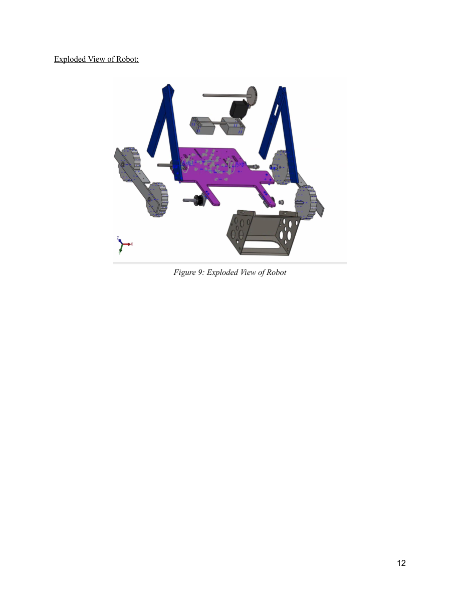

Challenge
Design a remote-controlled robot that could collect tennis balls, climb 15° and 30° ramps, and place balls on a vertical Velcro target while meeting tight material, size, and actuator constraints.
Engineering approach
The team selected a servo-driven lifting arm with a 3D-printed bucket. The design used two DC motors, belt-and-pulley four-wheel drive, a 3:1 drivetrain gear ratio, and a 4:1 arm gear ratio.
Outcome & iteration
The robot successfully collected and placed a ball during competition. Corner navigation and drivetrain friction limited performance; the report identifies shaft alignment, a smaller base, and single-ball handling as potential improvements.

CAD assembly figure reproduced from the team report.